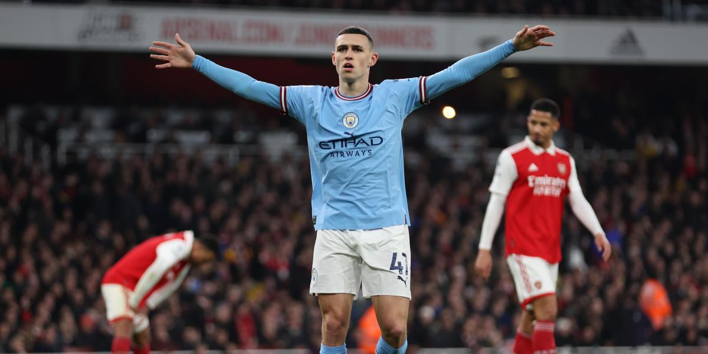

BIOGRAFIA DE FUTBOLISTAS FAMOSOS
PHILIP FODEN

Philip Walter Foden nació el 28 de mayo de 2000 en Stockport, sudeste de Manchester, en la Academia del City desde los seis años y ferviente seguidor del club pudo debutar con el equipo de su vida ante el Feyenoord en la Liga de Campeones, en noviembre de 2017, reemplazando a Yaya Touré para convertirse en el debutante más joven del City en competiciones europeas. Un mes más tarde se convirtió en el jugador inglés más joven en ser titular en la Champions League en Ucrania, ante el Shakhtar Donetsk Con su debut, se convirtió en el cuarto futbolista inglés más joven en debutar en la máxima competición europea solo por detrás de Wilshere, Solanke y Maitland-Niles. Pocas semanas después se convirtió en el futbolista inglés más joven en ser titular, con apenas 17 años y 192 días. ?Su debut en Premier League fue el 16 de diciembre ante el Tottenham. Pocos meses después, logró convertirse en el futbolista más joven en ganar una medalla de campeón de la Premier League batiendo el récord de Clichy. En diciembre de 2018, Phil comprometió su futuro con el City con un contrato hasta 2024. Durante las dos primeras campañas en el primer equipo ha conquistado dos títulos de la Premier League, dos de la Carabao Cup, una FA Cup y la Community Shield en otras dos ocasiones. La pasada campaña 2018/2019 sumó 26 partidos con el equipo de Pep Guardiola.
CRISTIANO RONALDO
Cristiano Ronaldo dos Santos Aveiro (Funchal, Madeira, 5 de febrero de 1985), conocido como Cristiano Ronaldo, es un futbolista portugués. Juega como extremo izquierdo o delantero y su equipo actual es el Al-Nassr F. C. de la Liga Profesional Saudí.18Es internacional absoluto con la selección de Portugal, de la cual es capitán y máximo goleador histórico. Considerado con frecuencia el mejor y más completo futbolista,19así como el mayor goleador del mundo,20además de uno de los mejores de todos los tiempos;n 321 es uno de los futbolistas más laureados de la historia, habiendo ganado, entre otras distinciones, cinco veces el Balón de Oro, cinco premios de la FIFA al mejor jugador del mundo y cuatro Botas de Oro. En 2020, tuvo el honor de ser elegido el mejor Jugador del Siglo xxi en la gala de los Globe Soccer Awards,2223 convirtiéndose en el primer futbolista europeo y el primer portugués en recibirlo, además de ser incluido en el Dream Team del Balón de Oro.24 Identificado habitualmente en los medios de comunicación con el numerónimo CR7,n 425 es, con 832 goles, el máximo goleador en la historia del fútbol profesional.
KAI HAVERTZ
Kai Lukas Havertz nació el 11 de junio de 1999 en Aquisgrán, Renania del Norte-Westfalia, Alemania. Richard Weidenhaupt-Pelzer, abuelo de Kai Havertz por parte de su madre, también era un futbolista activo y había ocupado el cargo de presidente del Alemannia Mariadorf, donde el propio Kai dio sus primeros pasos como futbolista. Los clubes favoritos de Kai Havertz durante su infancia y juventud fueron el Alemannia Aachen y el Futbol Club Barcelona. Desde que era un niño, Kai estuvo ligado al deporte rey. En la ciudad de Aachen, la familia Havertz siempre fue apasionada a la pelota, hasta tal punto que su casa estaba ubicada a solo 100 metros de la cancha de fútbol más cercana, lo que le permitía al pequeño poder practicar durante gran parte del día.